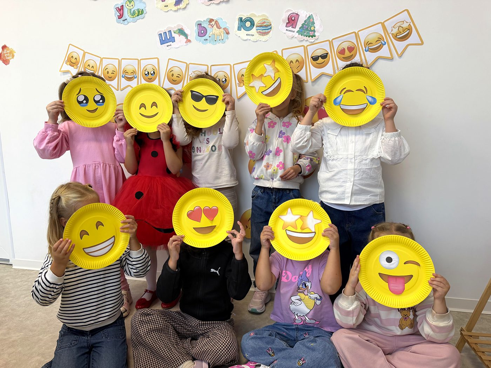
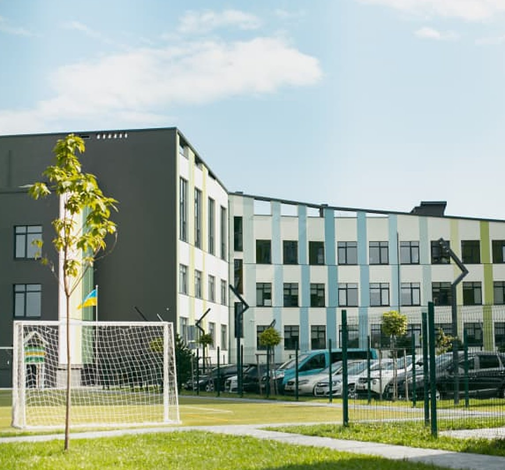
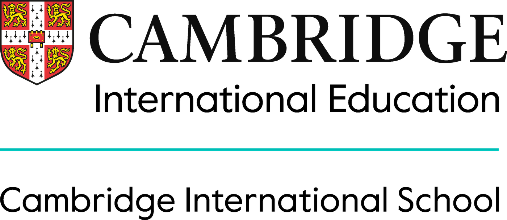

рівні —
один ліцей
Дитина росте разом із нами: від перших занять у «PreSchool» до випускного класу, з тими ж вчителями, правилами та друзями.

Приватний ліцей в Івано-Франківську, де навчання є трендом, а розвиток та безпека дітей є нашим пріоритетом.
Записатися
«PreSchool» у «VS School» — це ліцензований дошкільний підрозділ для дітей 5–6 років. Дитина приходить до 1 класу знайомою з ліцеєм, вчителями та правилами.
У групі до 16 дітей, тож кожна дитина отримує увагу педагога. Щодня заняття з англійської мови, 4-разове харчування з власної кухні та безпечна закрита територія.
Розповімо про формат і допоможемо визначити готовність дитини до школи.
Записатися на знайомствоВід підготовчої групи до випускного класу в одному ліцеї.
Ліцей — місце, куди хочеться йти, де дитина почувається безпечно та щасливо і вчиться не боятися помилок.
ЗаписатисяКомпетентний і успішний учень: патріот і новатор з широким кругозором та критичним мисленням, який поважає права інших і робить внесок у загальне благо.
Дитина почувається комфортно, має друзів і не зазнає стресу. Вчителі щирі, поважають учнів і дають кожному висловити власну думку.
Якісний сучасний заклад освіти, який щодня мотивує дитину йти в ліцей і досягати нових результатів.
Знайомство без поспіху: спочатку ви бачите ліцей, потім дитина проводить тут пробний день.
Ми працюємо за державною освітньою програмою, доповненою інтегрованими спецкурсами. На курс «Фінансова грамотність та підприємництво» запрошуємо керівників фірм та експертів, організовуємо екскурсії на підприємства.
У старших класах програма враховує підготовку до НМТ і ДПА, тож батьки економлять на репетиторах.
Розвиваємо критичне мислення, емоційний інтелект та самовираження кожного учня.

Залиште заявку на сайті. Менеджер зателефонує й запросить на екскурсію або День відкритих дверей.
Зустріч батьків з адміністрацією: відповідаємо на питання й показуємо ліцей.
Дитина знайомиться з вчителями та класом. Це знижує стрес перед першим днем. Педагоги, практичний психолог спостерігають за дитиною, прослідковують рівень знань дитини.
Ви підписуєте договір із закладом і подаєте документи для вступу.
Друга половина дня в ліцеї: мови, творчість, спорт і STEM без поїздок містом. Оберіть вік дитини, щоб побачити її гуртки.
Залиште заявку, прийдіть на екскурсію, дитина проведе пробний день, після чого ви підписуєте договір і подаєте документи.
Так. Ліцензована група «PreSchool» для дітей 5–6 років, до 16 дітей у групі, з англійською мовою та індивідуальним підходом.
Чотири рази на день. Їжу готують на власній кухні ліцею з сучасним обладнанням.
Закрита територія, власне укриття та безпечне освітнє середовище, у якому дитина не зазнає стресу.
Залиште заявку з контактами. Менеджер зателефонує протягом робочого дня й розповість про умови вступу та вартість.
Залиште контакти, і менеджер зателефонує протягом робочого дня.

Наша школа впроваджує навчання за міжнародною Кембриджською програмою, яка допомагає дітям розвивати знання, практичні навички та впевнено використовувати англійську мову.
Учні вивчають три предмети англійською мовою
Діти досліджують навколишній світ, проводять експерименти, виконують практичні завдання та вчаться мислити критично.
Учні розвивають емоційний інтелект, соціальні навички, вчаться піклуватися про себе та взаємодіяти з іншими.
Діти вдосконалюють навички читання, письма, говоріння та розуміння англійської мови.
Загалом навчання англійською мовою становить сім годин на тиждень. Також діти відвідують додаткові гуртки та заняття. У навчанні використовуються спеціальні підручники та книжки за Кембриджською програмою.
Уроки включають досліди, експерименти, цікаві практичні завдання та інтерактивну діяльність. Учні мають можливість скласти Кембриджський іспит та отримати міжнародний сертифікат відповідно до їх віку.
Наша мета не просто навчити дітей англійської мови, а допомогти їм використовувати її для пізнання світу, досліджень, спілкування та майбутніх можливостей.